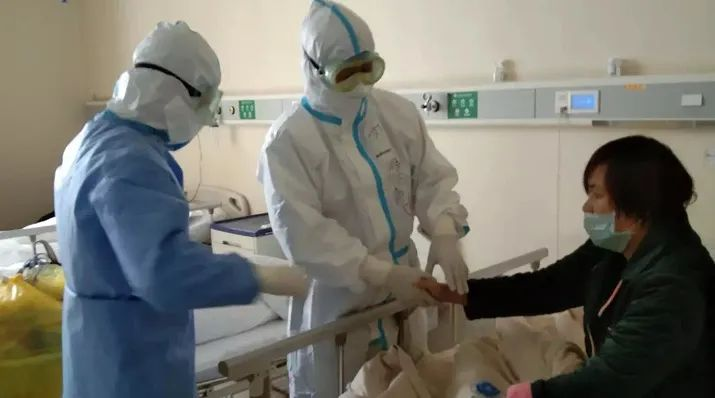
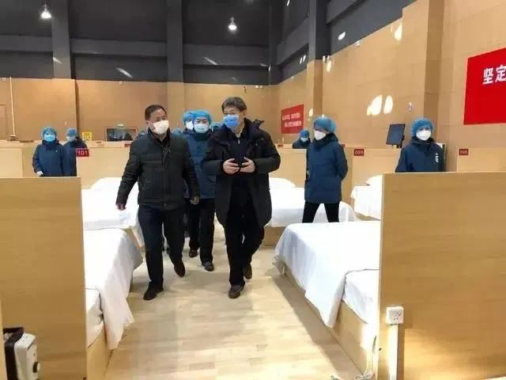
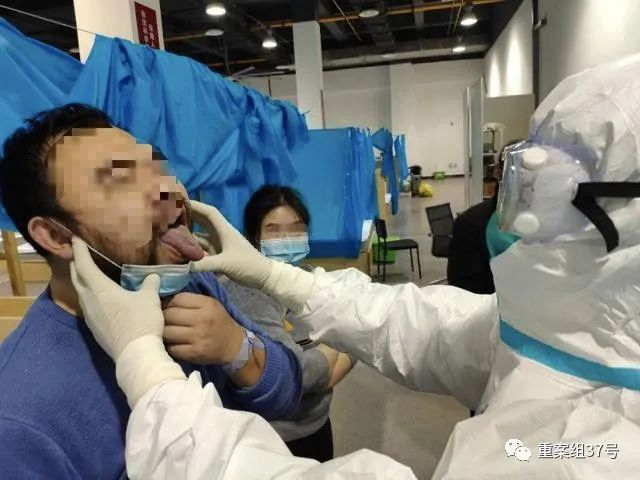
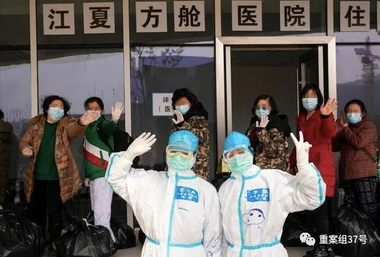

这些有名有姓的护士姐妹，在武汉以命相拼
原文链接 备份链接 尤其在最初仓皇无措的阶段，女性群体居多的一线护士站在了最前方，迎接急风骤雨，撑起最初的希望 文 |《财经》记者 刘以秦 陈亮 信娜 王小 编辑 | 谢丽容 又到一年一度3月8日国际妇女节，对中国所有女性，特别是一直坚 …
*****除了中医，江夏方舱也离不开一些西医的检测和诊疗手段，“中西医的优势是互补的，在疫情中是可以结合运用的。”*****

刘清泉（左二）在武汉协和医院西院区为患者把脉诊疗。图/北京中医医院微信公众号
文 | 新京报记者 王昱倩
编辑 | 李明 校对 | 付春愔
►本文约4157字，阅读全文约需9分钟
3月10日下午，江夏方舱医院运营了26天后，宣告闭舱。至此，武汉16家方舱医院全部结束了历史使命。
江夏方舱是湖北唯一一个以中医药治疗为主的方舱医院。中央指导组专家、北京中医医院院长刘清泉，担任江夏方舱医院院长。
刘清泉是国家中医医疗救治专家组副组长，1月21日，他以国家卫健委专家组成员的身份抵达武汉。两个月的救治工作，每天只睡四五个小时。他不仅要管理江夏方舱的运行，还要去武汉其他医院救治危重症患者。
作为唯一的中医方舱，江夏方舱共收治564个确诊病例，治愈482人，82人（含14名有基础病）尚未达出舱标准而转至定点医院。
接受新京报记者专访时，刘清泉介绍，方舱共推出了5个中医药方，效果明显，还给出院患者开14服中药帮助其后期康复。
除了中医，江夏方舱也离不开一些西医的检测和诊疗手段，“中西医的优势是互补的，在疫情中是可以结合运用的。”
主动请战建一所中医方舱
***** *****
*****
新京报：为什么会建立一所中医方舱医院？
刘清泉：1月21日，我以国家卫健委专家组成员的身份抵达了武汉，会诊新冠肺炎的病人。经过一段时间的临床诊断与观察，我们发现，中医药对新冠肺炎普通型、轻型患者有良好的疗效。于是，张伯礼院士和我向中央指导组提出，分类隔离轻、重症患者，集中管理，用中药治疗。
国家决定建立方舱医院后，张院士和我合计承包一个方舱，主要以中医的方式治疗。于是，我们以中央指导组专家的身份写了请示。很快，中央指导组就同意了。
新京报：筹建过程是怎样的？
刘清泉：获批后，我们组建了一支中医医疗队，有200多名医护人员，来自五个省份。
江夏方舱是由大花山户外运动中心改建的。开舱之前，张院士和我多次去看了建设现场，思考怎么更合理地规划。医疗队抵达后，先进行培训、熟识场地、院感检查。2月14日，正式开舱收治病人。
我们的方舱医院划分为五个病区——天一区、豫二区、陕三区、湘五区、苏六区，每个病区是由对应省份的医务人员来管理。患者之间也有划分，比如天一区主要收治男患者，豫二区收治女患者。
新京报：收治情况如何？
刘清泉：我们收治的都是确诊病例。A舱建好，第一批收了400个病人。十几天后，B舱也建好了，加起来一共800张床位，总共收治了564人。
新京报：一所收治几百名患者的方舱，你们是怎么运作和管理的？
刘清泉：我们采取了社区管理的方法，形成了每个科的社区。患者进舱登记时，我们把党员标出来，让党小组带领社区人员参加医疗活动。
他们相互之间鼓励，定时地锻炼、恢复。后来，很多病人也加入医疗队，帮助医护人员发药、打扫卫生、运垃圾。
我们要保证后勤人员零感染，不让清洁员进舱，垃圾都是由医护人员运出去。有些护士年纪小，95后、00后的都有，有些病人看到后就主动来帮忙。
我们一天至少三次查房，上午、下午、晚上各一次。科主任每天进舱重点查房。专家组就在指挥室坐镇，对病人病情综合讨论、判断。

刘清泉（前排右一）在江夏方舱医院。图/北京中医医院微信公众号
5个中药方和自制香囊
**************
新京报：新冠肺炎的中药方，是怎么拟定的？
刘清泉：1月份我抵达武汉后，对新冠病人做了临床诊断。从中医的角度看，这次疫病“湿毒”的特征比较明显，病情发展非常快。
发病初期，病人发烧不是特别高，会出现消化道症状和干咳，起起伏伏，大概持续7到10天。湿毒很容易化热，病人表现为高热、咳嗽、不能活动、喘促。
在治疗过程中，我们选择了一些经典名方，比如达原饮、厚朴夏苓汤、麻杏薏甘汤、银翘散等。临床效果不错，病人的体力尤其是疲倦、乏力改善得很明显。烧慢慢退下来了，咳嗽、喘闷也缓解了。这也符合中医治疗湿毒疫病的疗效。
1月21日，我和广安门医院的齐文升教授初步拟定了一个方案，后来经过国家中医药管理局专家组的讨论，确定了新冠肺炎诊疗的第一套中医方案，为后期的方案奠定了基础。
在临床取得了疗效之后，我们才想到承包中医方舱。
新京报：接手中医方舱后，你们如何进行中医诊疗？
刘清泉：我们一共推出5个中药方。根据国家中医药管理局的方案，我们做了一个肺炎治疗的药方。我们根据方案推荐的清肺排毒汤，也做了一个方子。
有些病人出现焦虑、失眠、情绪不稳定、食欲不好，我们又拟定了两个方子。后来，我们加了江夏方舱5号方，是针对病人出院以后，在两周观察期的愈后康复方。
新京报：作为唯一的中医方舱，会推出一些特色方案吗？
刘清泉：我们有一些康复治疗的手段。比如做八段锦、太极拳、经络拍打等，安排了固定的时间进行。这些活动振奋了大家的情绪，对患者的恢复有利。
有些失眠、咳嗽、消化不好的病人，医护人员也给他做温灸、穴位按摩、耳穴埋豆等。
方舱里还有一个流动中药房，里面有三四百味中药。医生处方来了之后，根据每个人的病情配方，能快速找到所需中药，配好处方，医护人员拿走后用开水冲泡。
此外，各省的医疗队都带了一些自己配制的香囊。入院、出院的病人都赠送香囊。这既是一种关爱的方式，香疗对心情、食欲的改善也有好处。
新京报：有没有让你印象深刻的患者？
刘清泉：豫二病区有一个女患者，她与老公、孩子都在不同的医院，心情很郁闷。我们想办法联系到了她的家人，一通上电话，心情一下子就好了。这对病情的恢复是很有利的。
湘五病区的一个病人，没有吃中药的习惯，刚开始时嫌苦不愿意吃中药。我们的科主任耐心劝导，后来他接受了中药，发现中药对食欲、身体机能的调整还挺有效果的。他爱人在另一家医院治疗，吃西药为主。出舱后，他跟爱人开玩笑说，我的效果比你好，痊愈得更早。

刘清泉在方舱内最后一次查房。患者取下口罩，让他查看舌苔。新京报记者 戴轩 摄
没有特效药，不代表没有有效的治疗方案
**************
新京报：穿着防护服、戴着护目镜，会不会影响中医诊断？
刘清泉：有难度也得做。不能说穿着防护服，戴着护目镜，基本的诊断思路就不做了。
“望闻问切”对病人的问诊非常重要。比如，望舌相。早期病人的舌相是腻苔。随着病情加重，舌苔逐渐变厚，由薄腻苔变成厚腻苔，舌苔变得白如积水。再进一步加重，变成黄苔，燥苔等。舌质由原来的淡红，变成舌质红，甚至变暗变紫。根据舌相的变化，对病人的诊断、治疗以及用药有重要的指导意义。
新京报：在没有特效药的情况下，西医的主要手段也是支持治疗。中医是不是也是这样？
刘清泉：没有特效药物不代表我们就不会治病了。我们用一系列的组合拳，能把病人治好就够了。即使有了特效的抗病毒药物，也不一定就能把病毒彻底杀死。这只是最佳的治疗手段之一，不是全部。
从中医的角度，也需要一种方法把病毒打死。如果打不死呢，就采取另一种方法：调整人体的状态，让病毒没有适合生存的环境，不让它在里面呆着。
所以我一直说，没有特效药物，并不代表我们没有有效的治疗方案，中医如此，西医也一样。
新京报：临床医生普遍反映有个治疗难题，比如重症患者的病情没有征兆地突然恶化，能通过中医手段及时发现吗？
刘清泉：按照中医的经验，舌苔厚腻干燥、裂纹，病人精神很差，固然没有明显的咳喘，但这可能是个重病人，一定要更加关注。再比如，两目无神，也是病情加重的标志。
在烈性传染病中，医生的观察不细致，没有及时捕捉到病情突然恶化，是情有可原的。这也要求我们静下心来，观察、观察再观察，找到这种新的疾病的规律。
新京报：你觉得新冠病毒有哪些未知的方面？
刘清泉：这个疾病来得很快，来得很重，给整个医学科学提出了太多不清楚、深感困惑的问题。不知道怎么制伏它，很多病情的状态也不清楚。这也提醒我们，未来对病毒的研究要加大力度，人才的培养和技术的储备也要增强。
一个新的病毒来了以后，我们还没有找到规律和很好的办法，只能见招拆招。疫情逐渐消退，但对于这个病的认识，我们还处于很初级的阶段。
新京报：总的来说，江夏方舱的救治效果怎么样？
刘清泉：从2月14日开舱，到3月10日休舱，江夏方舱医院在26天运营中，收舱人数564，治愈482人，82人（含14名有基础病）尚未达出舱标准而转至定点医院。
关键是医护人员的精心看护，及早发现、干预和治疗。另外，中医的综合治疗手段，汤药、针灸、耳针、穴位贴敷等，也发挥了应有的作用。

新冠肺炎患者治愈后走出舱与医护人员合影。新京报记者 陶冉 摄
“中、西医在疫情中的作用是互补的”
**************
新京报：闭舱后，你们会对病人的康复提供帮助吗？
刘清泉：从江夏方舱出院的患者，每人都带上14服中药。我们根据出院的情况开了汤药，对江夏区的病人做了后续工作。
休舱前，五个省市的11位中医专家在江夏区中医院收了11个徒弟，这段时间就带着徒弟们出康复门诊，保证病人康复期的治疗。
疾病从康复到治愈有一个过程。出院只是证明可以不在医院了，但完全康复进入社会工作，还需要一段时间。我们正在对出院的病人做观察研究，计划拿出一套康复方案。
新京报：中医方舱会用到西医治疗的手段吗？
刘清泉：中、西医可以结合运用。
与其他的方舱医院一样，江夏方舱的每个病人都要进行CT筛查。患者入院时，查看他的既往病史，要做血糖、淋巴细胞、白细胞、C反应蛋白、咽拭子等检查。在治疗期间，我们也会测血氧饱和度、心率、体温这些指标。判断一个患者是否具备出院的条件，专家组就在指挥室，对他的指标综合讨论。
新京报：你怎么看待中、西医在这次疫情中发挥的作用。
刘清泉：中医有中医的长处，西医有西医的优势，它们是互补的。
没有现代西医的诊断技术，你知道它是什么病吗，有没有传染性，什么时候能治好吗？尤其在这场战役中，谁能上谁上。控制疫情、救命是根本任务。
我们也与国外的中医专家有讨论和沟通，看能不能用我们的经验，为当地的病人提供一些服务。
新京报：江夏方舱休舱后，你现在的工作重心是什么？
刘清泉：除了方舱的工作，我每天与急救危重症的专家们一起查房、会诊ICU的重症病人。
快两个月了，每天只能睡四五个小时。武汉几乎所有的医院都去过了，我们天天都在ICU病房里，与中、西医的同行们思考、讨论。
对于危重病人，如何用药，减少呼吸机的损害、稳定血压等，都是非常复杂的过程，不是一个方子、一味药能解决的，这需要中西医的有机配合。
新京报：你怎么看待方舱医院这样的模式？
刘清泉：方舱发挥了重要的作用，使疫情得到控制。其实大家都希望早闭舱，疫情早结束，但是又有一种遗憾，好像还没有把力量用完。
有的人说，不想出院了，其实是对方舱医护服务的感念。但方舱是个医院，没有人愿意在医院生活。我们也希望他尽早出院，回归正常生活。
短短时间内，出现几万病人，任何一个国家和城市，都无法承载。如何迅速地建立新的医疗资源，让病人应治尽治，方舱是一个非常好的办法。这为将来我们应对各种疫情提供了非常好的经验。
*洋葱话题*
*▼*
*****你对中医怎么看？*****
*后台回复关键词*****“洋葱君” ，加入读者群****
***推荐阅读***

金银潭医院ICU医疗组长房明浩：重症救治就像“走钢丝”

*********************既然在看，就点一下吧****** *********************
*********************
原文链接 备份链接 尤其在最初仓皇无措的阶段，女性群体居多的一线护士站在了最前方，迎接急风骤雨，撑起最初的希望 文 |《财经》记者 刘以秦 陈亮 信娜 王小 编辑 | 谢丽容 又到一年一度3月8日国际妇女节，对中国所有女性，特别是一直坚 …
原文链接 备份链接 住进武昌方舱的第二天，付丹看到有人在垃圾站收拾，将在地上扔得乱七八糟的垃圾捡起来放到垃圾箱里。她感到有些奇怪，清洁工怎么没有穿防护服呢。一问，原来那人是住在同一个病区的病友，住在159号床。 文***｜******* …
原文链接 备份链接 新冠病毒肺炎（COVID-19）不分国界。想要帮助全人类战胜这种疾病，美国和中国以及世界其它各国专家之间的密切合作必不可少。 哪类患者会转为危重症病人？哪些病人会幸存？区分他们的临床特征是什么？这些是美国各州医生最 …
原文链接 备份链接 **记者/李佳楠 ** 编辑/石爱华 宋建华 河南援鄂医疗队在武汉市第四医院古田院区前 在武汉市第四医院古田院区上岗的第一天，河南首批援鄂医疗队的护士贾晓阳，就参与料理一位新冠肺炎病人的遗体，“是一位原本可以安享晚年的 …
原文链接 备份链接 之前服务于方舱医院的GE医疗“诺亚一号” 一体式CT检查室，如今就在越来越多的医院落地。方舱医院的模式，也在湖北以外的更多省份开始走向常态化，为预防型公共卫生防疫体系的建设添砖加瓦。作为团队里年龄最小的光头护士，国文霞 …